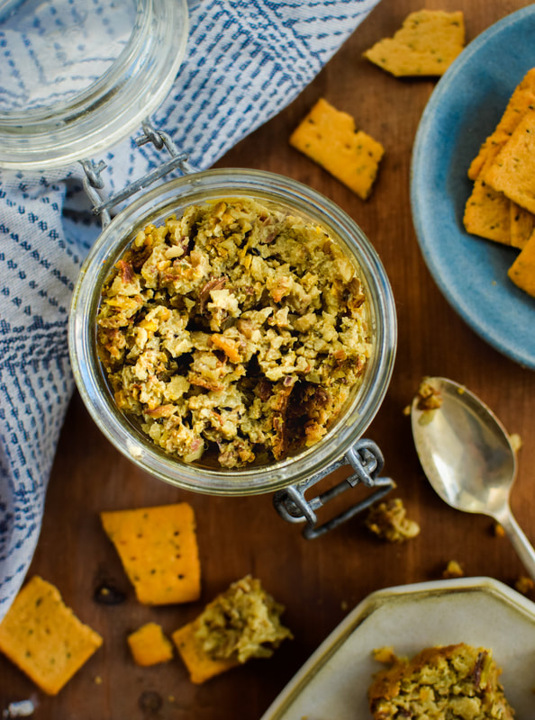

Minh Dung's Mud

Everything but the kitchen sink. Because kitchen sinks are bad for you.
This is a dish that can be whatever you want it to be. It could be
interpreted as a bachelor's bowl, a dog bowl, a mash up, or a pate. It is
a blank canvas for your creativity in the kitchen. You can use whatever you want.
Just know that you will have to eat the final result.
I first created this dish when a group of friends and I were going on a hike
and were in need of some kind of sandwich. We were on a camping trip, so
resources were limited. I just put together what I could find using avocado
as my base. We spread it on everything bagels and enjoyed every
bite. Ever since then, it was a request for our hikes. Especially when paired
with our homemade bread!
I know a blank canvas can be intimidating, so I have drafted this recipe to
be a springboard for you. You can follow it to the T or say, "Mmmmm...I'm not
sure that'd be any good. I want to try something a bit different." I'm not
just kidding when I say everything but the kitchen sink. It can be whatever
you want it to be. Have fun! Scale the recipe according to the size of your
blender, or break out your hands and the kitchen knife and have at it.
Ingredients:
- 1 block of extra firm tofu
- 1/2 a head of broccoli roughly chopped
- 1/2 a red bell pepper rouhly chopped (cooked to bring out the sweetness
beforehand is better)
- 1/2 a carrot roughly chopped
- A handful or 2 of greens. Lettuce, salad mix, cabbage, any will work.
- 1/3 of a kitchen spoon of Better than Boullion
- A tablespoon of salt
- A shot of soy sauce
- A tablespoon of garlic powder
- A tablespoon of onion powder
- A tablespoon of black pepper
- A tablespoon of oregano
- 1/3 cup of olive oil
- Juice from half a lime
Steps
- Drop the tofu at the bottom of the blender.
- Add in all of your sauces, seasonings, and the oil. (Not the lime juice.)
- Add in the carrots and broccoli. (And cabbage if you're using it or
any other green that's just as fiberous.)
- Blend until carrots are coarsely minced. Stir as needed.
- Add in the bell pepper, greens, and lime juice.
- Blend until your desired consistency.
- Taste for balance of flavors. Add in more of any ingredient you feel
will properly balance it. Ex: Too satly? Add in more veggies!
Note: Keep in mind what you're eating it with. Is a little bit of
saltiness a good match?
- Put in a container which is safe for hiking.
- Grab other foods and beverages necessary. Don't forget a spoon!
- Serve with friends and enjoy telling them about your concoction.